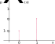

Estatística
Distribuição Bernoulli
Uma variável aleatória \(X\) tem distribuição Bernoulli, quando resulta de um experimento em que há apenas dois resultados possíveis, em geral denotados por \(0\) e \(1\), sendo que \(1\) indica a ocorrência do evento de interesse, e \(0\) caso contrário.
Seja \( \theta\) a probabilidade do evento de interesse ocorrer \( (0 < \theta < 1) \), isto é, \( P(X=1) = \theta\), e \(1-\theta\) a probabilidade da não ocorrência do evento de interesse, ou seja, \(P(0) = 1- \theta\).
Função de Probabilidade
Digamos que \(\Omega\) seja o espaço amostral e \(A \subset \Omega\) o evento de interesse. A sua não ocorrência é então dada por \(A^c\), de modo que temos \(P(A) = P(X=1) = \theta\) e \(P(A^c) = P(X=0) = 1-\theta\).
Assim, a função de probabilidade é dada por
\[ p_X(x) = P(X=x) = \begin{cases} \theta^x(1-\theta)^{1-x}, ~~~~ \text{ se } x \in \{0,1\}\\ 0 ~~~~~~~~~~~~~~~~~~~~ \text{ caso contrário} \end{cases} \]e denota-se \(X \sim Bernoulli(\theta)\) para indicar, que uma variável aleatória \(X\) segue (possui) distribuição Bernoulli com parâmetro \(\theta\). É comum também representar \(\theta\) por \(p\) e \(1-\theta\) por \(q\), de modo que \( p+q = 1\).
Podemos representar graficamente a função de probabilidade da distribuição Bernoulli como

Para mostrar que \(p_X(x)\) apresentada acima é uma função de probabilidade, basta mostrar que \( \sum_{x\in \mathbb{R}}P(X=x) = 1\). Vejamos:
\[ \begin{array}{rcl} \sum_{x\in \mathbb{R}}P(X=x) & = & P(X=1) + P(X=0)\\ & = & \theta^1(1-\theta)^{1-1} + \theta^0(1-\theta)^{1-0}\\ & = & \theta + (1 - \theta)\\ & = & 1 \end{array} \]Função de Distribuição
A função de distribuição é para esse caso é
\[ F_X(x) = \begin{cases} 0, ~~~~ \text{se } x < 0;\\ 1-\theta, ~~ \text{se } 0\leq x < 1;\\ 1, ~~~~ \text{se } x \geq 1 \end{cases} \]Graficamente \(F_X(x)\) é
Esperança
A esperança de uma variável aleatória \(X\) com distribuição Bernoulli é
\[ \mathbb{E}[X] = \sum_i_n \]Variância
Exemplos de experimentos aleatórios cuja variável aleatória segue distribuição Bernoulli são- o lançamento de uma moeda e o resultado ``cara'' é o evento de interesse;
- o sexo de um filhote ao nascer e ``fêmea'' é o evento de interesse;
- um anúncio para um cliente ser convertido em venda e o evento de interesse "convertido em venda"